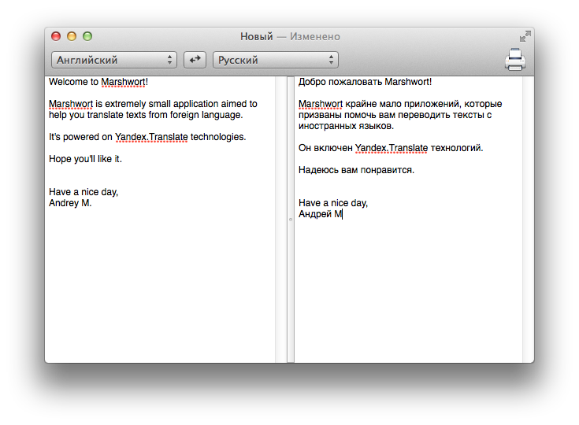

Document-based version of marshwort
View the Project on GitHub amka/Marshwort
Marshwort it's an document-based application which provides users abilities to translate text from one language to another.

It's powered by Yandex.Translate API.